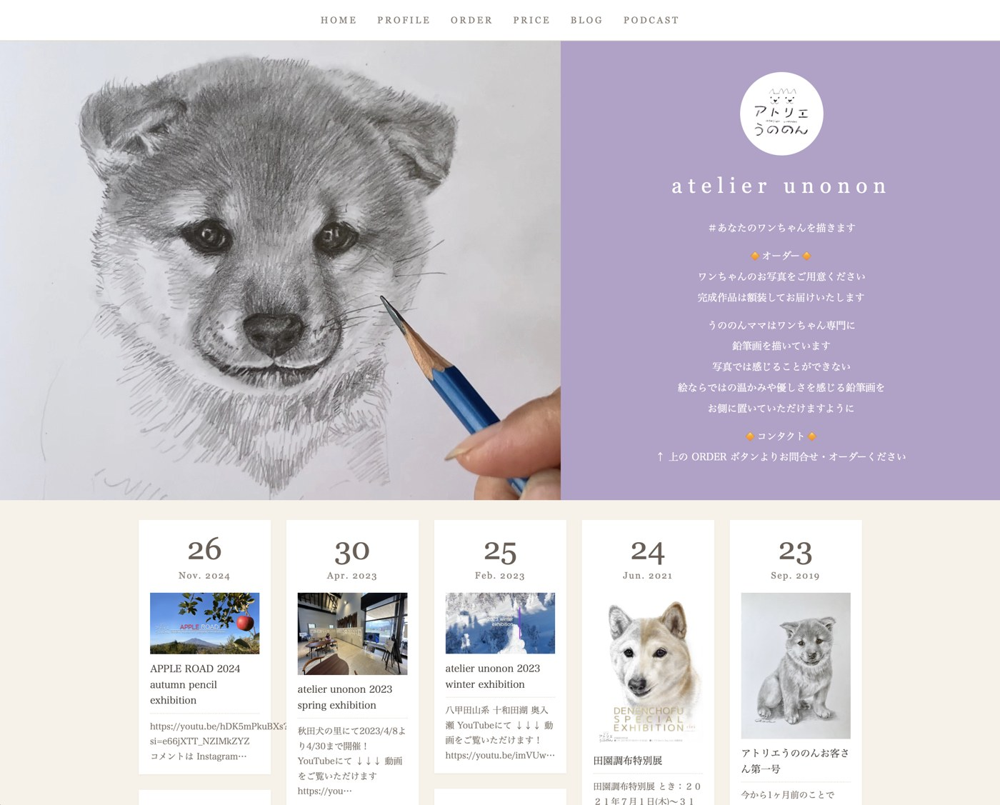
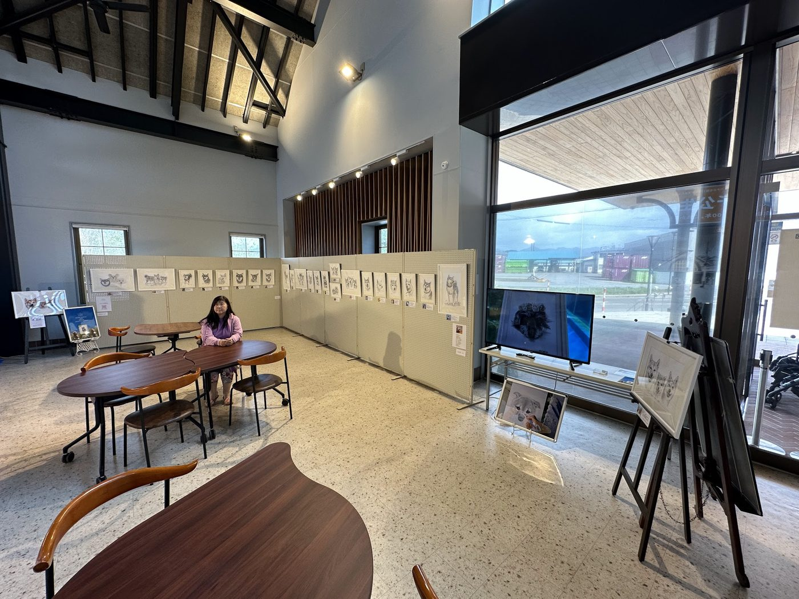
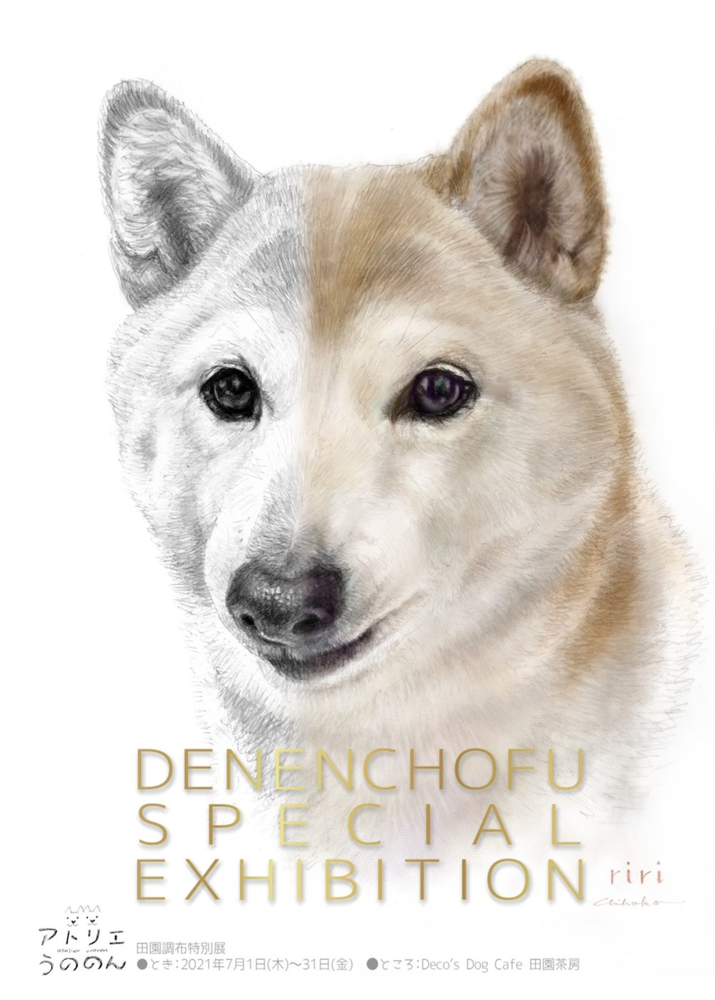
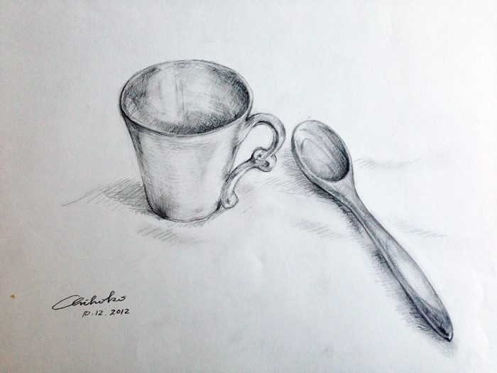
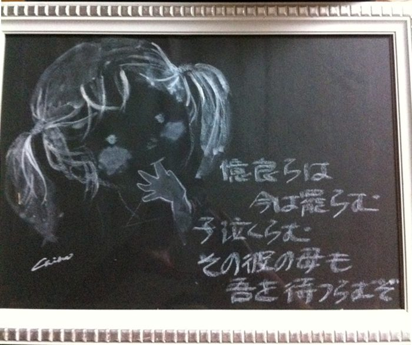
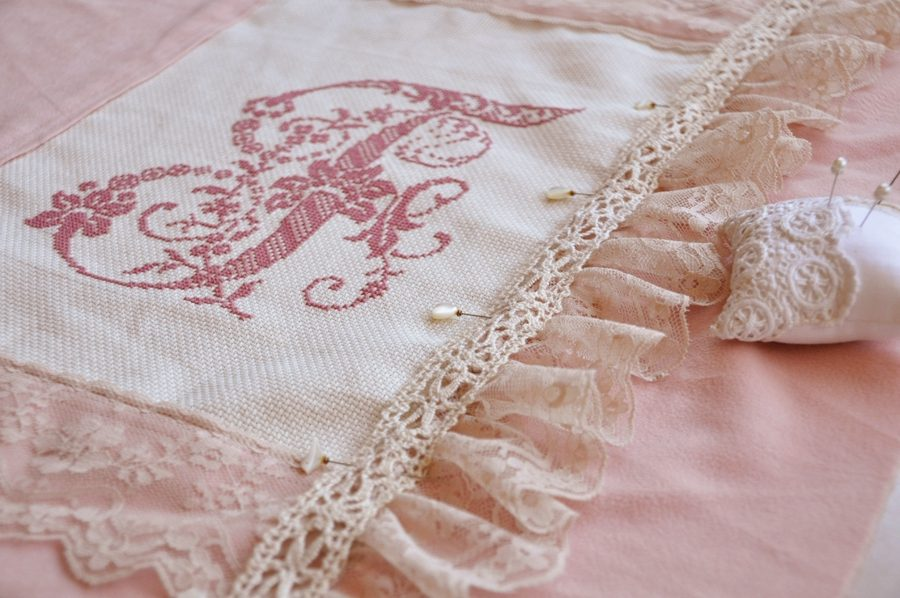
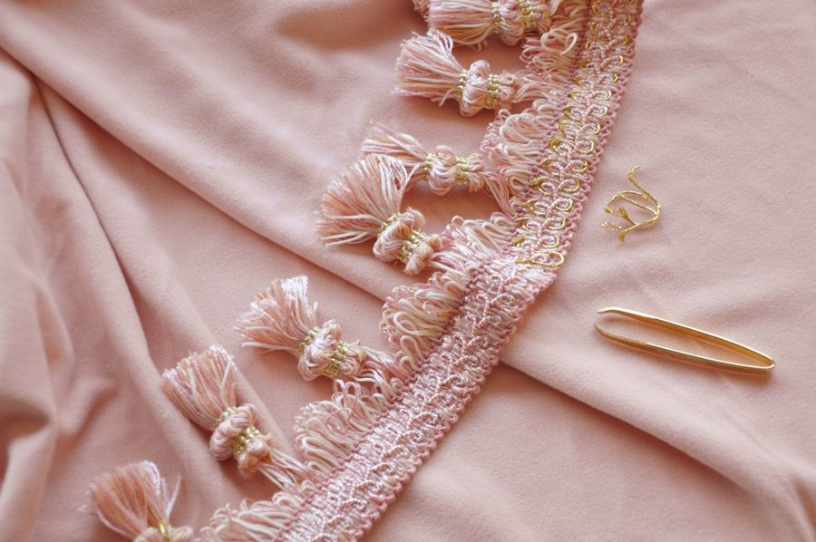
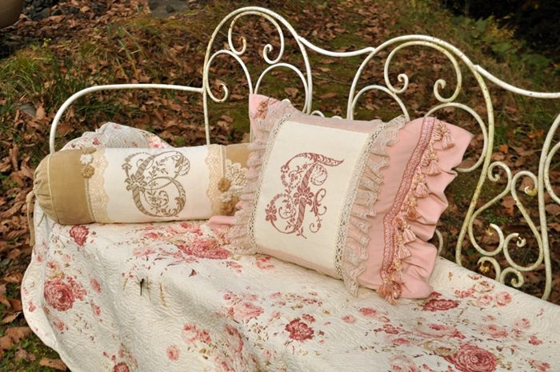
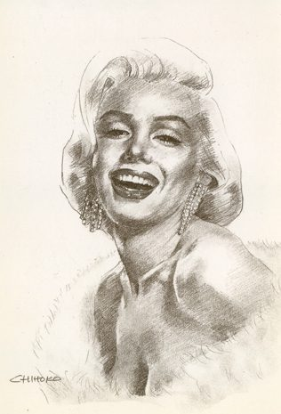
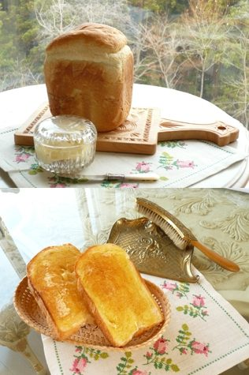

ホームページが引っ越しました

いつもアトリエ うののんをご覧いただき、ありがとうございます。
このたび、ホームページが新しい場所へ引っ越しました。新しい住所はこちらです。
https://atelier-unonon.github.io/
これまでの記事は、すべてそのまま移転しています。
そして新しいHPでは、ポッドキャストも聴けるようになりました。上の「PODCAST」のページから、「もんの369ラジオ」や「楽曲の物語ラジオ」をお聴きいただけます。
これからも、うののんママの鉛筆画を、どうぞよろしくお願いいたします。
APPLE ROAD 2024 autumn pencil exhibition
https://youtu.be/hDK5mPkuBXs?si=e66jXTT_NZIMkZYZ
コメントは Instagram ↓ までお願い致します
https://www.instagram.com/p/DCoWzwezm...

atelier unonon 2023 spring exhibition
秋田犬の里にて2023/4/8より4/30まで開催！

YouTubeにて ↓↓↓ 動画をご覧いただけます
atelier unonon 2023 winter exhibition
八甲田山系 十和田湖 奥入瀬

YouTubeにて ↓↓↓ 動画をご覧いただけます！
田園調布特別展

田園調布特別展
とき：２０２１年７月１日(木)〜３１日(金)
ところ：：Deco's Dog Cafe 田園茶房
アトリエうののんお客さん第一号

今から1ヶ月前のことです。
アトリエうののんをスタートさせようと思いinstagram を通じて仲よくなったフォロワーさんに「わたし、犬の絵描きさんをやろうと思っています。」とメッセージした直後の返信が驚きでした
。
「わたし、お客さん第一号になります‼️」
絵も値段も何も無い状態で、その言葉には相当に励まされました。
うのちゃんのことが大好きなフォロワーさんですので
「もちろん、うのちゃんの絵で」と添えられてました。
その方がのちに選んでくださったのが、この鉛筆画です。
このうのちゃんの目を気に入っていただきました。
うのちゃんは小さい時から目にインパクトがあって、ほかのパピー柴ちゃんとは違う雰囲気でした。
オーダーのほかに うののんの絵も時々描いていきたいと思っています😊
アトリエうののんへのいきさつ

わたしが25年間 経営していた飲食店をクローズして、自分に何ができるかを考えたときに浮かんだことは絵を描くことでした。
22年前、大館市内で唯一の百貨店で「真実の肖像」という鉛筆画の個展を開催して以来ずっと絵を描いていませんでした。
その理由は絵以外の趣味を持っていたこともありますが、二人の息子たちが絵を描くことに興味を持つようになったことが大きいです。
当時小学生だった長男があるゲーム雑誌の投稿コーナーにイラストを描いて落選続きだったころ、「お母さんも描いて応募してみて」と言われて投稿したイラストが本紙に大きく掲載、その時長男は嬉しさ半分がっかり感半分の様子でした。
わたしはその時息子たちの絵心を伸ばすには自分は描かない方がいいと感じました。
幸運なことに長男はわたしが掲載された悔しさをバネにめきめき絵が上達してその雑誌の投稿コーナーの常連になることができました。
のちに某週刊少年誌の漫画家になり、現在はゲームクリエーターになっています。
次男は現在アニメの作画監督をしています。
ずっと心の中では50代になったらまた絵を描こうと思っていました。
それが、今回このタイミングで実現。
ここ数年、特にinstagram を始めてからは柴犬やワンちゃんに興味が強くなっていましたので、オーダーで犬の絵を描こうと思いました。
#あなたのワンちゃんを描きます
わたしの描く絵でどなたかが喜んでくださるのはとても素敵でありがたいことです。
今日の絵はうのちゃん。
まっすぐ純真な目でこちらを見ています。
初心忘るべからずの気持ちでまい進しようと思います。
どうぞよろしくお願いいたします。
（無題）

作者プロフィール
普津澤智穂子 (ふつざわちほこ)
1962年大館市生まれ、大館市在住
秋田県立大館鳳鳴高校 京都芸術短期大学
1978年 秋田県美術展 油絵 奨励賞
1979年 秋田県美術展 油絵 入選
1996年 鉛筆画個展「真実の肖像」秋田県大館市
2016年 写真展個展「のんのそら」大館能代空港
2016年 写真展個展「のんのそら」田園調布
2018年 東京カメラ部2018instagram部門入選
2018年 しまうまプリント公式アンバサダー就任
2018年 みんなでつくるフォトブック48smile企画制作
2019年 みんなでつくるフォトブック48hengao企画制作
2019年 みんなでつくるフォトブック48puppy企画制作
2019年 フォトブック売上金全額48万円犬猫保護団体へ寄付
2019年9月 アトリエうののんopen
2019年12月 アトリエうののん鉛筆画展個展 大館能代空港
2020年2月 アトリエうののん横浜展 横浜ランドマークタワー
2020年8月 アトリエうののん日本犬展 秋田県大館市
2020年9月 アトリエうののん成田国際空港48展
2020年12月 ONLINEアトリエうののん鉛筆画展 in 小坂鉱山事務所
2021年2月 ONLINEアトリエうののん鉛筆画展 in 思い出の潟分校
2021年4月 ONLINEアトリエうののん鉛筆画展 in 弘前城
2021年5月アトリエうののん こいぬ鉛筆画展 in 北欧の杜公園
デッサンにチャレンジ〜☆

ずっとずっと久しぶりにデッサンを描いてみました。
鉛筆を削って、練り消しゴムやケント紙を用意、・・・懐かしい空間。
先月、帰省中だった息子たちと一緒にデッサンした時の一コマです。
何年も描いていないと、情けないくらい感覚が鈍っていました。
特に多面体でできているこの石膏像のデッサンは難しかったです

ティーカップと木のスプーンの静物を描いたデッサン。
丸テーブルを囲んで描いたのですが、どの角度からでも描けるつもりでいたので
息子たちに場所選びを優先させたら、わたしは難しい構図になってしまいました。
構図ばかりではなく、タッチや表現も納得のいかない中途半端な出来上がり。
息子たちのほうが熟れたデッサンを描いていました。
思い出したように描いたのでは、やはりいい絵は描けないものですね。
やっぱり「継続は力なり」なのでしょう・・・。
お恥ずかしいですが、これから時どき絵を描きたい気持ちがあるので、
次回以降のステップアップのために拙いデッサンを載せておくことにします・・・。
30年前に描いた絵との再会

思いがけない再会がありました。
facebookが、わたしの青春時代に描いた絵と現在のわたしをつないでくれました。
先週、わたしのfacebookへのメッセージに
「こんにちは。多分鳳鳴で同期のTといいます。fbでたまに拝見してます。
ところで、間違えてたらすみませんが、この絵に見覚えがありませんでしょうか。
突然ですみませんが、もしやと先日、田舎にかえって見つけ、
もしやと思ったものですから。」と、この写真が届きました。
一瞬、誰の描いた絵だろうと見ると、『Chiho』とわたしのサイン。
黒地に白でいわさきちひろを模して描かれた女の子と山上憶良の短歌です。
いわさきちひろも短歌も高校生の頃気に入っていたことを思い出しました。
「えっ？この絵はわたしが描いた絵なの？」とちょっと驚きました。
そういえば、美術部で学校祭のときに小作品を展示したことがありました。
「お届けいただいた画像の絵は確かにわたしの絵で、びっくりしています。
でも、どうしてこの絵をTさんがお持ちなのでしょう・・・。
ごめんなさい。当時のことをよく覚えていません。
ただ本当に懐かしいふわ〜っとした気持ちになりました。」と返信しましたら
「やっぱりそうでしたか。嬉しいですね。fbっていいですね。なければ一生そのままでした。」本当にその通り。
facebookがなければ再び目にすることはありませんでした。
この絵をTさんがお持ちになっていた経緯については、
「確か美術部部員の作品が廊下に展示されてた時があって、
その中にこの絵がありました。この絵の何とも言えない優しいタッチと、
詩が若きわたしの感性を刺激したのでしょうね。」
当時、美術部のわたしの幼なじみを通して売ってくれないかと交渉したところ、
わたしは高校生だからタダでいいですと譲ったということでした。
そして、30年以上のときが流れてfecebookで自分の絵に再会できました。
こんな未来をこの絵が持っていてくれたなんて、本当に感動。
記憶の重なりをくぐり抜け、そこに表れたこの絵を描いている自分。
よく30年後に開けるタイムカプセルを地中に埋めて卒業することが行われていますが
まさにそんな展開、っていうよりも未来にその絵に遭遇するなんて思わずにいたから
もっとサプライズな嬉しい出逢いになりました。
「絵は大事に部屋に飾ってました。時を越えて、こうやって当時の場面を思い浮かべて、
文章を打っている自分が不思議な気持ちになります。」
とTさんはメッセージを届けてくださいました。
この短歌は「憶良はもうおいとまします。今、子どもが泣いているでしょう。
子を負う母もきっと私を待っているでしょう。」いう訳です。
愛妻家で子ども思いの憶良、その温かく幸せな家族を連想し、当時この絵を描きました。
気がつけば、わたしはその子育ての年代をとっくに過ぎてしまいましたが、
とても微笑ましく向き合えた自分を嬉しく思います。
そして、こうして30年以上もの未来にめぐり合わせてくださった
Tさんにとても感謝しています。人生とは本当に愉しいものです。
イニシャル「F」でクッション

クロスステッチし終えたイニシャル「F」でクッションをハンドメイドしました。
中素材は正方形の羽毛フェザーのヌードクッションを使っています。
長いこと新品のまま放置していましたが、やっと出番が訪れました〜。
やっぱり羽毛はふかふかしていて触り心地が気持ちいいです。
表の素材は、ほっこりと柔らかなベルベット調のピンクの布地に
縦長の「F」の刺繍に合わせレースとタッセルブレードとフリルを縦にレイアウト。

くすんだピンクのアンティークレースの上にトーションレースをかぶせます。
そしてその中にサテンリボンを通してレースの端を目隠し。

取り寄せたタッセルブレード。色は最高にマッチして満足でしたが・・・
どうしてもゴールドのコードが気になって、悩んだ末に取り除くことにしました。
ミシンがけされているのでコードをすくってハサミで切ってから、
小さな毛抜きで一つひとつ丁寧に抜いていく根気の要る作業です。
付け足す作業は簡単なのですが、引く作業は本当に手間がかかるものです。
しかも、かなりの力が必要。か弱くなくて良かったゎ（笑）。
ちょっとの苦労の甲斐あって、ゴールドのコードを取り除いたら上品になりました。

平凡な四角いクッションでも両サイドにフリルとタッセルブレードをつけることで、
ありふれていないクッションに仕上がりました。
先月、ハンドメイドしたイニシャル「C」のクッションと並べたら
色と形が違ってもテイストが同じなので、しっくり馴染んでくれました。

ちょっぴり洋書に出てくる写真のような雰囲気・・・。
今日は風が吹くたびにハラリハラリと落ち葉が舞っていました。
カサカサと枯れ葉が音をたてるのを聞きながらカメラを構えました。

クッションはお気に入りのピンクのソファに色もサイズもお似合いです。
ハンドメイドは手間も時間もかかりますが、完成したときには達成感があります。
作っている間、やっぱり手仕事が好きだなって実感しました。
また、ハンドメイドしたいなって思っています。
30年前の油彩

わたしがこの絵を描いたのは15歳の時。
近所の畑の農作業から帰宅するおばあちゃんがモデルです。
油彩８０号で、実物はわたしの身長より大きいです。
この作品は、秋田県美術展覧会(県展)に出品して、奨励賞をいただきました。
当時、高校生の奨励賞受賞は秋田県史上初ということでした。
その発表の日がちょうど３０年前の今日でした。
不思議なことにちょうど、誕生日と重なったのでよく覚えています。
テレビと新聞で紹介していただき、とても嬉しかった記憶があります。
それで、母校の大館鳳鳴高校から作品を譲ってほしいと要望がありました。
立派な額に入れ、金色のネームプレートも付けて当時の真新しい新校舎に
第一号として飾っていただいた思い出の一枚です。
先日、この絵に数年ぶりに
対面してきました。
３０年経った今でもこうして校内に飾ってくださっていて感慨深いです。
たくさんの方々がご覧になってくださるから絵も幸せだと思います。
当時の美術の先生、そして母校に感謝しています。

鉛筆デッサン

わたしがまだ２～３歳だった頃、
母が保母でしたので勤務先の保育園に連れられて
紙と鉛筆を預けられて一日を過ごす毎日でした。
知らず知らずのうちに絵を描くのが好きになっていました。
学生時代の得意教科は美術。
大館鳳鳴高校時代は美術部で油絵を描き、
京都芸術短期大学時代は日本画を専攻していました。
水墨画・水彩画・書道なども
習いましたが基本中の基本の
鉛筆画が一番好きです。
中でも人物が得意です。
デッサンが狂っていると一目瞭然ですから ごまかしが効かないところがいいです。

ここに紹介しているのはオードリー・ペップバーンとマリリン・モンローです。
一方向からの線だけで影をつけているところが私流です。
お店にも同じポストカードを用意してありますのでご希望の方には
差し上げますのでお話くださいね。
手づくりパン

今日は朝食のパンについて。
わたしはいつも朝は自分でつくったパンを食べています。
ホームベーカリーで簡単につくれますので、手間いらずでとっても美味しく出来ます。
これを食べてからはもう市販のホテルブレッドには満足できなくなってしまいました。
美味しい時間をさらに心地よくするために道具にもわたしのこだわりがあります。
パンをカットするためのブレッドボードも家具職人さんの手彫りのハンドメイド。
パン皿はロシア製のベレスタという工芸品で白樺の皮で作られています。
テーブルのパンくずを片付けるためのブラシセットなどお気に入りアイテムを揃えています。
冬は薪ストーブの上で焼いてます。外側はカリっと内側はふわっと焼きあがって極上です。